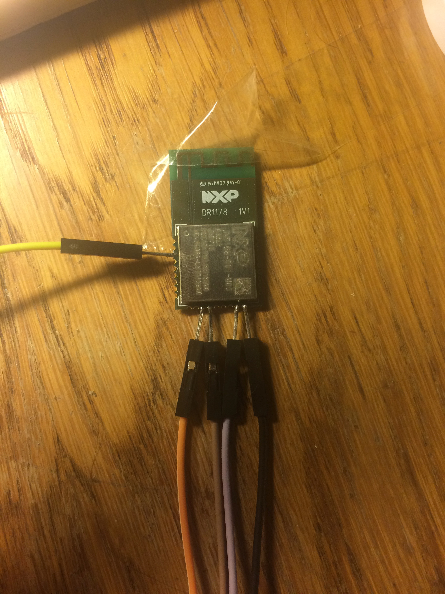
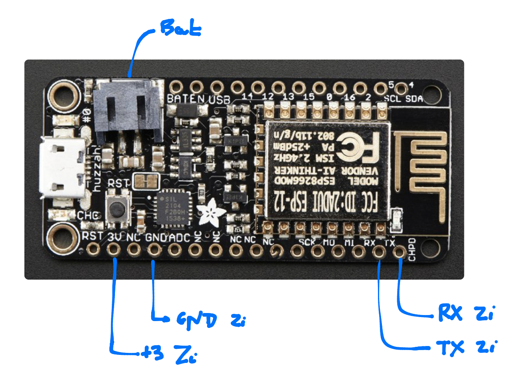
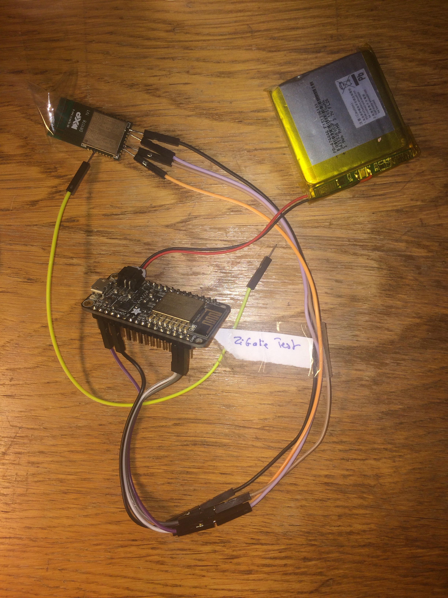

Do It Yourself¶
Module Wifi¶
J’ai développé mon propre module WIFI du fait de petits soucis sur le premier module disponible. Finalement il fonctionne tellement bien et fourni une protection coupure électrique avec une batterie que je l’utilise dans toutes configuration et même avec mon sniffer ZigBee …
Comme je voulais avoir l’option Zigate Wifi dans Abeille et un petit soucis avec le module proposé par Akila, j’ai fait quelques investigations.
Pour ceux qui connaissent Adafruit, il y a un module que j’avais en stock: https://www.adafruit.com/product/3046

Ce montage possede un ESP8266, un étage de « puissance » avec batterie, un CP2104 USB-Serial, … et est programmable facilement avec l’IDE Arduino.
J’ai aussi ma Zigate version bidouille:
Restait à les connecter.
Voici un petit schéma du cablage:
Restait que le SW à faire et à téléchargé dans l’ESP8266. Le soft: https://github.com/KiwiHC16/Abeille/blob/master/WIfi_Module/WIfi_Module.ino
Pour télécharger, compiler avec l’IDE Arduino et télécharger avec le cable USB. Il est necessaire ne déconnecter le TX/RX de la Zigate.
Maintenant j’ai une Zigate autonome sur batterie en Wifi !!!
Batterie est égale à:
Je peux mettre la Zigate ou je veux
si le cable USB est branché sur un charger, je suis autonome en cas de coupure de courant
Vous trouverez le source et le bin à la page: https://github.com/KiwiHC16/AbeilleDoc/tree/master/diy/wifi_module
Module PTVOINFO¶
A COMPLETER !!